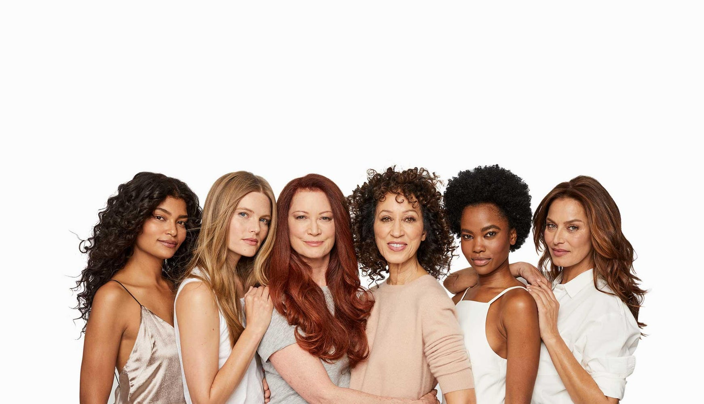

Tips & Tricks to Mastering the Hair Game!

Diy Masks
For Hair Growth:
1 tablespoon of coconut oil
1 teaspoon of cinnamon
Combine both ingredients and make sure they are mixed properly. Apply the mixture to hair starting with scalp. Once applied throughout the hair, cover hair with shower cap or towel. Let the mask sit for between 30-45 minutes then rise and wash hair normally.Repeat once a week!

To Treat Oily Hair:
1 egg
½ lemon
Take the white of the egg and lemon juice and mix together until you get a smooth consistency. Apply on damp hair from root to end and then cover with shower cap. Let the mask sit for between 30-45 minutes then wash hair normally.

To Treat Dry Hair:
2 tablespoons of brown sugar
1 tablespoon of olive oil
Combine ingredients in a bowl or container and mix. Apply mask from root to end. Let mask sit for 15-20 minutes. Rinse with water.
All masks recipes and images were found here!
Our Favorite Brands
Shea Moisture
“We are natural, sustainably-produced goodness. Made with love for you and your body. Pioneering fair trade through Community Commerce at home and abroad. We strive to be sulfate free, paraben free and more, whenever possible. Tested on our family for four generations. Never on animals.”
Popular Shea Moisture Products:
Coconut & Hibiscus Curl Enhacing Smoothie

Jamaican Black Castor Oil Leave In Conditioner

Check out more by Shea Moisture!
Pacifica
“100% Vegan and Cruelty Free”
Popular Pacifica Products:
Coconut Power Moisturizing Shampoo

Rose Water Sleek & Shiny Conditioner

Dove
“We believe beauty should be a source of confidence, and not anxiety. That’s why we are here to help women everywhere develop a positive relationship with the way they look, helping them raise their self-esteem and realise their full potential.”
Popular Dove Products:
Daily Moisture Shampoo
:max_bytes(200000):fill(white)/http://dcmzfk78s4reh.cloudfront.net/1514931710865.jpg)
Daily Moisture Conditioner

Tips & Tricks To Maintaining Healthy Hair
~~~ Soak or rinse hair in Rice water which is a method that the Yao women of China have been using for centuries. Rice water also contains Vitamins B - needed for strong hair - C - needed to produce sebum which keeps the scalp moisturised - and E - prevents hair loss.
~~~ Using natural oils such as coconut, jojoba, castor, and avocado can help stimulate growth as well as prevent dandruff.
~~~Try not to brush your hair when it’s wet, it’s the main cause of hair breakage.
~~~Sleeping on a silk pillowcase protects the hair from breakage and moisture loss while you’re sleeping.
~~~ Use an old t-shirt instead of a towel to dry your hair. Towels can cause frizz and breakage while using a t-shirt is light enough to soak up moisture while preventing the frizz.
